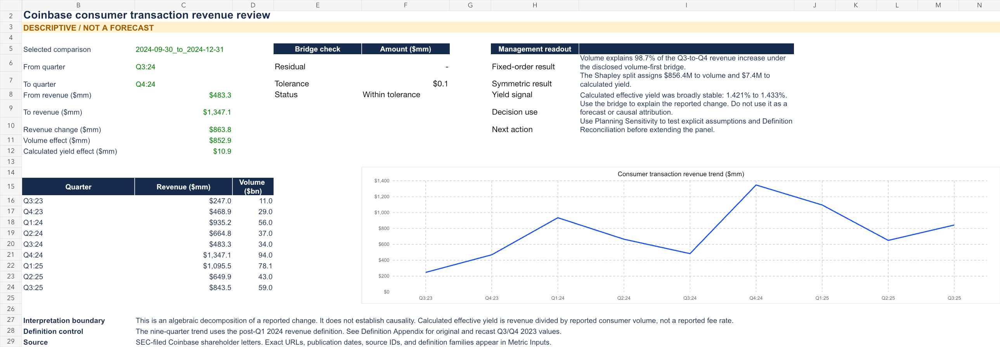

Nearly all of the change follows volume.
Consumer spot volume increased from $34B to $94B. The fixed-order bridge below reconciles to the reported revenue change.
Three ways to allocate the same change.
The interaction term moves with factor order. The symmetric Shapley method averages the two orders; every method totals $863.8M.
Swipe to view the full table →
Effective yield is consumer revenue divided by consumer spot volume. It is a proxy, not Coinbase’s fee rate. These are accounting decompositions, not causal contributions.
Stress the Q4 2024 reference.
Change volume and effective yield around the reported Q4 result to frame operating questions. The workbook contains editable inputs.
Swipe to view the full table →
| Case | Volume change | Yield change | Implied revenue | Management prompt |
|---|---|---|---|---|
| Downside | −20% | −10 bps | $1,002.5M | Investigate activity retention and mix. |
| Reference | 0% | 0 bps | $1,347.1M | Q4 2024 actual reference; no forecast. |
| Upside | +20% | +10 bps | $1,729.3M | Test operating readiness and mix sustainability. |
Mechanical sensitivities only. These are not Coinbase guidance, probabilities, or expected outcomes.
Comparability determines what the model can say.
A longer time series is useful only when its definitions are consistent.
Definition control
The later Q2 2026 deck restated Q2–Q4 2025 consumer spot volumes below earlier disclosures by $1.5B, $1.6B, and $2.3B. Both vintages are preserved; those periods stay outside the earlier panel.
The source register retains 13 frozen SEC documents with SHA-256 hashes.
Why there is no forecast
A preset gate required twelve comparable quarters: eight to train and four chronological holdouts. Public filings support nine under one definition, bounded by the Q1 2024 revenue reclassification and later trading-volume changes.
This release publishes the bridge and sensitivities without a forecast-accuracy claim.
Built to be checked.
The seven-sheet workbook exposes formulas and source references. The companion package includes the reviewer packet, reproducible SQL, automated definition and cutoff checks, and a public AI contribution disclosure.

Follow the numbers to the source.
Start with the decision memo, inspect formulas, then use the reviewer packet to test the strongest objections.